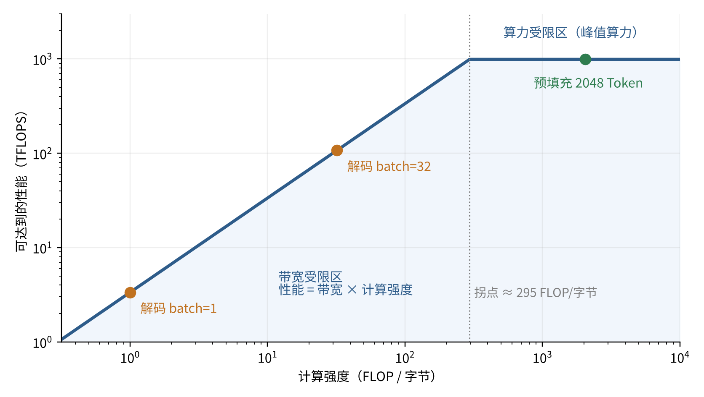
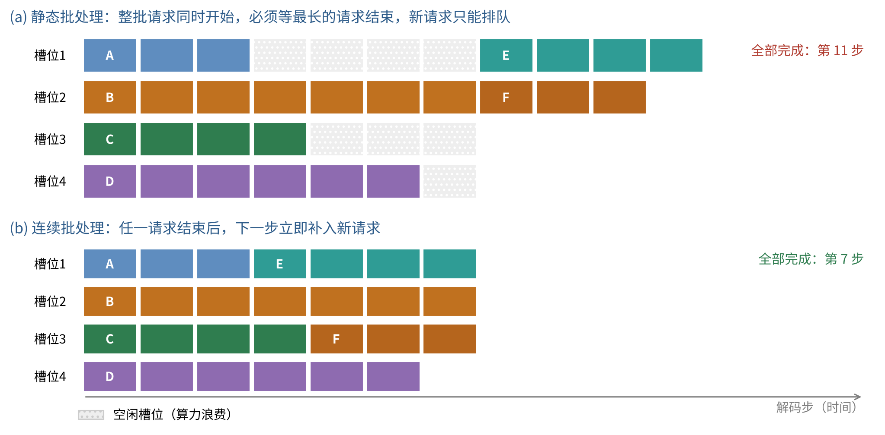
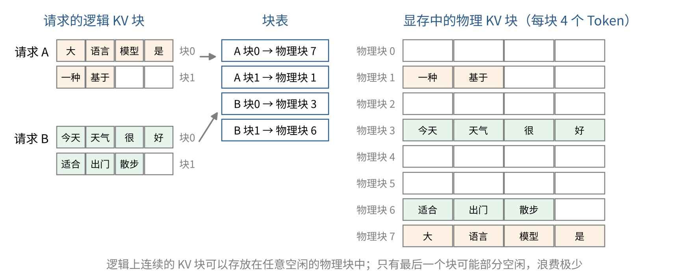
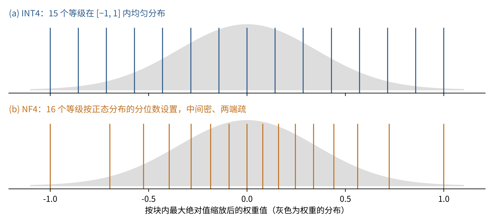
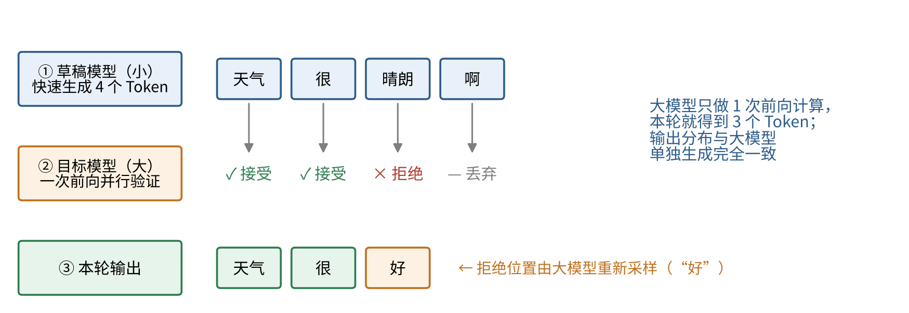

3.9 推理性能与优化技术
3.8 节从原理上说明了一次推理请求是如何完成的。但在实际服务中，一个模型往往要同时面对成百上千个用户，还要满足严格的响应时延要求。本节讨论如何衡量推理性能、硬件的哪些因素决定性能，以及业界为提升推理效率发展出的主要优化技术。
3.9.1 推理性能指标
衡量推理性能，需要从”单个用户的体验”和”整个系统的效率”两个角度来看：
- 首 Token 时延（TTFT）：用户发出请求后多久看到第一个字，主要取决于预填充阶段和排队等待的时间；
- 每个输出 Token 的时延（TPOT）：输出过程中相邻两个 Token 的间隔，决定了用户感受到的”打字速度”。人的阅读速度大约相当于每秒十几个 Token，因此 TPOT 只要稳定在几十毫秒以内，用户就会觉得流畅；
- 吞吐量（Throughput）：整个系统每秒生成的 Token 总数（或每秒完成的请求数），决定了一台服务器能服务多少用户，直接关系到服务成本；
- 并发数：系统能同时处理的请求数，主要受显存中能容纳的 KV Cache 数量限制。
这些指标之间往往存在此消彼长的关系：为了提高吞吐量，可以把更多请求合并成一批处理，但每个用户分到的计算资源随之减少，TPOT 就会变长。实际部署时，通常先根据业务需求设定服务水平目标（Service Level Objective，SLO），例如”TTFT 不超过 1 秒、TPOT 不超过 50 毫秒”，再在满足 SLO 的前提下尽量提高吞吐量。
3.9.2 硬件三要素与屋顶线模型
1．影响推理性能的硬件因素
可以把运行大模型的设备想象成一座”推理工厂”：计算单元是工人，显存是仓库，内存带宽是仓库到车间的传送带。从这个角度看，影响推理性能的硬件因素主要有以下几个。
（1）计算单元决定”算得有多快”。 算力通常用每秒浮点运算次数（FLOPS）或每秒运算次数（OPS）衡量：
- 1 TFLOPS \(= 10^{12}\) FLOP/s，1 TOPS \(= 10^{12}\) OP/s；
- 1 PFLOPS \(= 10^{15}\) FLOP/s，1 EFLOPS \(= 10^{18}\) FLOP/s。
需要注意，厂商标称的 FLOPS 或 OPS 是指定精度下的理论峰值，必须确认是 FP32、FP16、BF16、FP8、INT8 还是 INT4，以及是否为稀疏计算下的数值。同一块显卡在不同精度下的峰值可能相差数倍乃至数十倍。
（2）显存（或统一内存）容量决定”能不能跑”。 运行模型时，显存中通常要同时容纳：模型权重、KV Cache、推理框架自身的开销、临时计算张量和显存碎片，以及桌面显示或其他 GPU 程序的占用。显存不足时，框架可能把部分模型层放到系统内存中，由 CPU 计算或通过 PCIe 总线传输数据，这称为 CPU 卸载（CPU Offload），代价是速度大幅下降（见 3.9.8 节）。
（3）内存带宽决定”数据喂得有多快”。 推理过程中，GPU 需要不断读取模型权重和 KV Cache。如 3.8.5 节所述，单请求逐 Token 生成时并行度很低，计算单元容易等待数据，因此单用户的生成速度往往与有效内存带宽密切相关。硬件规格给出的是理论峰值带宽，实际有效带宽还受内存类型、频率、位宽和通道配置，推理框架与量化内核的访存方式，KV Cache 大小和上下文长度，操作系统和其他程序的内存竞争，以及功耗、温度和持续运行频率等因素的影响。
（4）推理框架和驱动决定”硬件能发挥多少”。 即使两张显卡的理论参数相近，实际速度也可能因以下条件不同而有明显差异：是否支持模型所用的量化格式；模型各层能否完整加载到 GPU 上；是否有针对当前硬件架构优化的计算内核；是否支持高效的 KV Cache 管理、批处理和注意力优化；驱动、框架与操作系统是否兼容。
2．屋顶线模型
一个计算任务到底受算力限制还是受带宽限制，可以用屋顶线模型（Roofline Model）来分析。定义任务的计算强度（Arithmetic Intensity）为每读取一个字节数据所做的运算次数：
\(I = \frac{\text{运算次数（FLOP）}}{\text{访存量（字节）}}\quad\) (3-45)
在峰值算力为 \(P_{peak}\)、内存带宽为 \(B\) 的设备上，该任务能达到的性能上限为
\(P = \min\left( P_{peak},\ B \times I \right)\quad\) (3-46)
如图 3-22 所示，性能曲线像一个”屋顶”：计算强度较低时，性能随 \(I\) 线性增长，受带宽限制；计算强度超过拐点 \(I^{*} = P_{peak}/B\) 后，性能达到峰值算力，受算力限制。

图3-22 屋顶线模型（以 H100 为例：BF16 稠密算力约 989 TFLOPS，显存带宽约 3.35 TB/s）
对于大模型中的线性层，若以 16 位精度同时处理 \(b\) 个 Token，运算量约为 \(2Nb\)，而权重的访存量约为 \(2N\) 字节，因此计算强度约为
\(I \approx \frac{2Nb}{2N} = b\quad\) (3-47)
由此可以清楚地看到两个阶段的区别：预填充一次处理数千个 Token，\(I\) 达到数千，远超 H100 约 295 的拐点，处于算力受限区；单请求解码时 \(b = 1\)，\(I \approx 1\)，只能发挥峰值算力的约 0.3%，处于带宽受限区。提高解码效率的关键，就在于设法提高计算强度，或减少需要读取的数据量。 下面介绍的批处理、量化、投机解码等技术，都可以从这个角度来理解。
3.9.3 批处理与连续批处理
1．批处理提高吞吐量
既然解码时读一次权重只为一个 Token 服务太”浪费”，那么最直接的办法就是批处理（Batching）：把多个请求合并起来，读一次权重同时为 \(b\) 个请求各生成一个 Token。按式（3-47），计算强度随之提高到约 \(b\)。在带宽受限区，一个解码步的耗时可以近似为
\(t_{\text{步}} \approx \frac{M_{\text{权重}} + b \times M_{\text{KV}}^{\text{每请求}}}{B}\quad\) (3-48)
即每一步都要读一遍全部权重，再加上所有请求各自的 KV Cache。
【例 3-6】 在显存带宽约 2.0 TB/s 的 A100-80GB 上，以 FP16 部署 LLaMA-7B（权重约 14 GB，采用标准多头注意力，每个 Token 的 KV Cache 为 \(2 \times 32 \times 32 \times 128 \times 2\) 字节 \(= 0.5\) MB）。设每个请求的上下文为 2048 个 Token，估算不同批量大小下的解码性能。
解： 每个请求的 KV Cache 约为 \(0.5\ \text{MB} \times 2048 \approx 1.07\) GB。按式（3-48）计算，结果如表 3-15 所示。
表3-15 批量大小对解码性能的影响（估算）
| 批量大小 \(b\) | 显存占用 | 每步耗时 | 系统吞吐量 | 每个用户的生成速度 |
|---|---|---|---|---|
| 1 | 15.1 GB | 7.5 ms | 133 tokens/s | 133 tokens/s |
| 8 | 22.6 GB | 11.3 ms | 708 tokens/s | 89 tokens/s |
| 16 | 31.2 GB | 15.6 ms | 1026 tokens/s | 64 tokens/s |
| 32 | 48.4 GB | 24.2 ms | 1323 tokens/s | 41 tokens/s |
| 48 | 65.5 GB | 32.8 ms | 1465 tokens/s | 31 tokens/s |
可以看到：批量从 1 增大到 32，系统吞吐量提高了约 10 倍，而每个用户的生成速度只下降到原来的约 1/3；但随着批量增大，KV Cache 逐渐取代模型权重成为读取量的主体，吞吐量的增长趋于平缓，显存也很快被 KV Cache 占满。这再次说明，KV Cache 的大小决定了推理系统的并发上限。
2．连续批处理
传统的静态批处理把若干请求凑成一批，同时开始、同时结束。但不同请求的输出长度差别很大：先完成的请求只能空占槽位，等待批中最长的请求结束，新到达的请求则只能排队（图 3-23(a)）。
连续批处理（Continuous Batching，也称迭代级调度）由 Orca 系统（2022）提出：调度以”解码步”为单位进行，每一步结束后检查是否有请求已经完成，一旦有空位，下一步就立即补入新请求（图 3-23(b)）。这样 GPU 几乎始终满负荷运行，新请求也不必长时间等待。连续批处理已成为 vLLM、SGLang、TensorRT-LLM 等现代推理引擎的标准功能。

图3-23 静态批处理与连续批处理
3.9.4 PagedAttention：像管理内存页一样管理 KV Cache
批处理能否发挥作用，取决于显存中能放下多少个请求的 KV Cache。早期的推理系统为每个请求预先分配一块连续的显存，大小按最大可能长度（如 2048 个 Token）预留。但请求最终会生成多少 Token 事先无法知道，于是产生了大量浪费：预留了却没用上的空间、请求之间无法利用的碎片。vLLM 的作者测量发现，这类系统中有 60%～80% 的 KV Cache 显存被浪费。
PagedAttention 由 Kwon 等人于 2023 年提出，其灵感来自操作系统的虚拟内存分页机制（图 3-24）：
- 把 KV Cache 切分成固定大小的块（Block），每块存放若干个 Token（如 16 个）的 K 和 V；
- 每个请求的 KV Cache 在逻辑上是连续的，但在物理显存中可以分散存放在任意空闲的块里，二者之间的对应关系由一张块表（Block Table）记录；
- 请求每生成满一块，再按需分配下一块，只有最后一块可能部分空闲。

图3-24 PagedAttention 的分块管理
这样，KV Cache 显存的浪费被降到 4% 以下，同样的显存能容纳更多并发请求。vLLM 报告其吞吐量达到当时主流系统的 2～4 倍。分块管理还带来了另一个好处：多个请求如果有相同的前缀（例如相同的系统提示词），就可以共享同一批物理块，而不必各存一份。在此基础上发展出的前缀缓存（Prefix Caching）技术，例如 SGLang 的 RadixAttention，会把已经计算过的前缀 KV Cache 保留下来，后续请求遇到相同前缀时直接复用，从而跳过这部分的预填充计算，显著降低 TTFT。
3.9.5 FlashAttention：减少注意力计算的访存
标准的注意力计算会先算出完整的 \(s \times s\) 注意力分数矩阵 \(QK^{\top}\)，把它写回显存，再读出来做 softmax，最后乘以 \(V\)。当序列很长时，这个矩阵本身就非常大（\(s = 32\text{K}\) 时，单个注意力头就有约 10 亿个元素），反复读写它的时间远远超过实际计算的时间。
FlashAttention 由 Dao 等人于 2022 年提出，是一种”IO 感知”的精确注意力算法。它把 \(Q\)、\(K\)、\(V\) 切成小块，逐块加载到 GPU 片上速度极快但容量很小的 SRAM 中完成计算，并借助”在线 softmax”技巧逐块累积结果，始终不在显存中生成完整的注意力矩阵。这样，注意力计算的显存占用从随序列长度平方增长降为线性增长，速度也提升了数倍；而且计算结果与标准注意力完全相同，不是近似。FlashAttention 及其后续版本已经成为训练和推理中注意力计算的事实标准，也是大模型能够支持长上下文的重要基础。
3.9.6 模型量化
1．基本原理
量化（Quantization）把模型中的数值从高精度（如 FP16）转换为更低位宽或更紧凑的表示（如 INT8、INT4）。量化后，模型文件变小，显存占用和每一步需要读取的数据量也随之下降。它的作用有两方面：一是让原本放不进设备的模型有了运行的可能；二是按式（3-41），在带宽受限的解码阶段，读取的数据量减少，生成速度也随之提高。
以最常见的对称线性量化为例，把一组浮点数 \(\mathbf{w}\) 量化为 \(k\) 位整数时，先计算缩放因子 \(s\)，再把每个数除以 \(s\) 并四舍五入：
\(s = \frac{\max_{i}\left| w_{i} \right|}{2^{k - 1} - 1},\quad\quad q_{i} = round\left( \frac{w_{i}}{s} \right),\quad\quad{\widehat{w}}_{i} = s \cdot q_{i}\quad\) (3-49)
其中 \(q_{i}\) 是存储的整数，\({\widehat{w}}_{i}\) 是计算时反量化得到的近似值。
【例 3-7】 将一组权重 \(\mathbf{w} = (0.42,\ - 1.27,\ 0.08,\ 0.91)\) 量化为 INT4（取值范围 \(- 7 \sim 7\)），求量化结果和误差。
解： 缩放因子 \(s = 1.27/7 \approx 0.181\)。各权重除以 \(s\) 后约为 \(2.32\)、\(- 7\)、\(0.44\)、\(5.02\)，四舍五入得 \(\mathbf{q} = (2,\ - 7,\ 0,\ 5)\)。反量化得 \(\widehat{\mathbf{w}} \approx (0.363,\ - 1.270,\ 0,\ 0.907)\)，绝对误差分别为 \(0.057\)、\(0\)、\(0.08\)、\(0.003\)。可以看到，绝对值较小的 \(0.08\) 被直接量化成了 \(0\)。
这个例子揭示了量化的核心难题：缩放因子由最大值决定，少数绝对值很大的”离群值”会让其他数值的精度大幅下降。 假如这组数中有一个 \(12.7\)，那么 \(s\) 会变为约 \(1.81\)，其余三个数将全部被量化为 \(0\) 或 \(\pm 1\)。研究发现，大模型的激活值中普遍存在这样的离群特征，且模型越大越明显。
2．量化的粒度、时机与对象
为了减小离群值的影响，量化通常按更细的粒度进行：逐张量（整个矩阵共用一个 \(s\)）、逐通道（每行或每列一个 \(s\)）、逐组（每 64 或 128 个数一组，各用一个 \(s\)）。粒度越细，精度越高，但需要额外存储的缩放因子也越多。3.6.8 节介绍的 QLoRA 就采用了每 64 个数一组的分块量化。
按量化发生的时机，分为训练后量化（Post-Training Quantization，PTQ）和量化感知训练（Quantization-Aware Training，QAT）。PTQ 直接对训练好的模型进行量化，只需少量校准数据，成本低，是大模型最常用的方式；QAT 在训练过程中模拟量化误差，让模型提前适应低精度，效果更好但需要重新训练。
按量化的对象，分为仅权重量化（如 W4A16：权重 4 位、激活值 16 位，计算前把权重反量化）和权重与激活值同时量化（如 W8A8：可以直接使用整数矩阵乘法，同时提高计算速度）。前者主要缓解显存容量和带宽压力，适合解码阶段；后者还能利用低精度的算力优势，适合计算受限的场景。此外，KV Cache 也可以量化（如量化为 FP8 或 INT8），从而在长上下文、高并发场景下容纳更多请求。
3．代表性的量化方法
- LLM.int8()：发现大模型激活值中的离群特征后，把少量离群维度保留为 16 位计算，其余部分用 INT8 计算；
- SmoothQuant：通过数学上等价的缩放，把激活值中的离群”难度”转移一部分到权重上，使二者都易于量化，实现 W8A8；
- GPTQ：逐层量化权重，利用二阶信息（Hessian 矩阵）补偿量化误差，可在数小时内把千亿参数模型量化到 3～4 位；
- AWQ：根据激活值的大小识别出约 1% 的”显著权重”，通过逐通道缩放对它们加以保护，从而在 4 位下保持较高精度；
- NF4：QLoRA 提出的 4 位数据类型，按正态分布的分位数设置量化等级（图 3-25，见 3.6.8 节）。

图3-25 INT4 与 NF4 的量化等级比较
4．量化后的显存估算
表 3-16 列出了 7B 模型在不同精度下的权重大小。
表3-16 7B 模型在不同精度下的权重大小
| 数据类型 | 每个参数占用 | 7B 模型权重 | 说明 |
|---|---|---|---|
| FP32 | 4 字节 | 约 28 GB | 训练时的主权重精度，推理很少使用 |
| FP16 / BF16 | 2 字节 | 约 14 GB | 推理的”原始精度” |
| FP8 / INT8 | 1 字节 | 约 7 GB | 精度损失通常很小 |
| INT4 / NF4 | 0.5 字节 | 约 3.5 GB | 需要较好的量化方法，精度略有下降 |
| GGUF Q4_K_M | 约 0.6 字节 | 约 4.1 GB | llama.cpp 常用格式，含缩放因子等开销 |
需要强调，这些只是权重的大小。实际运行时，还要加上 KV Cache、临时张量和框架开销，因此不能只按权重估算所需显存。
【重点】为什么量化以后”我的电脑突然能跑模型了”？ 一个 7B 模型以 FP16 存储需要约 14 GB，超过了大多数笔记本的显存；量化到 4 位后只需约 4 GB，再加上 KV Cache 等开销，8 GB 显存或 16 GB 统一内存的设备就能运行，而且由于每步读取的数据少了，生成速度反而更快。代价是一定的精度损失：通常 8 位量化几乎无损，4 位量化在多数任务上损失不大，3 位及以下则损失明显。
3.9.7 投机解码
批处理提高的是系统吞吐量，却无助于降低单个用户的生成时延。有没有办法让一个请求的解码步骤也”并行”起来？投机解码（Speculative Decoding）给出了一个巧妙的答案。它的出发点有两个：一是解码受带宽限制，大模型做一次前向计算处理 1 个 Token 和处理 5 个 Token 的耗时相差无几；二是很多 Token 是”容易猜”的，小模型也能猜对。
如图 3-26 所示，投机解码的每一轮包括三步：
- 用一个小而快的草稿模型（Draft Model）连续生成 \(k\) 个候选 Token；
- 把这 \(k\) 个 Token 一次性交给大的目标模型，在一次前向计算中并行算出每个位置上目标模型的概率分布，逐个判断是否接受；
- 从第一个被拒绝的位置开始，丢弃其后所有候选，并由目标模型在该位置重新采样一个 Token。

图3-26 投机解码的一轮过程
设草稿模型对某个 Token \(x\) 给出的概率为 \(q(x)\)，目标模型给出的概率为 \(p(x)\)。投机采样以概率 \(\min\left( 1,\ p(x)/q(x) \right)\) 接受该 Token；若拒绝，则从按 \(\max\left( 0,\ p(x) - q(x) \right)\) 归一化得到的分布中重新采样。可以证明，这样得到的输出分布与目标模型单独生成时完全相同，投机解码只加速、不改变结果。
若每个候选 Token 被接受的概率约为 \(\alpha\)，一轮中草稿模型提出 \(k\) 个候选，则目标模型每做一次前向计算，平均能产出的 Token 数为
\(\mathbb{E}\left\lbrack \text{每轮产出的 Token 数} \right\rbrack = \frac{1 - \alpha^{k + 1}}{1 - \alpha}\quad\) (3-50)
例如 \(\alpha = 0.8\)、\(k = 4\) 时，每轮平均产出约 \(3.36\) 个 Token。扣除草稿模型的开销后，实际加速比通常在 2～3 倍。除了使用独立的小模型，还可以在大模型上增加几个额外的预测头（如 Medusa、EAGLE），或者利用模型训练时自带的多 Token 预测模块（如 DeepSeek-V3 的 MTP）来生成候选。
3.9.8 显存不足时的其他手段
1．CPU 卸载
当显存放不下整个模型时，推理框架可以只把一部分层放在 GPU 上，其余层留在系统内存中，由 CPU 计算，或在需要时通过 PCIe 总线传到 GPU。例如，llama.cpp 允许用户指定放到 GPU 上的层数。CPU 卸载让大模型”能跑起来”，但速度会大幅下降：PCIe 4.0 x16 的单向带宽约 32 GB/s，系统内存的带宽通常也只有每秒几十到一百多 GB，都比显存带宽低一个数量级以上。
2．模型压缩
除量化外，还可以通过以下方式从根本上减小模型：
- 剪枝（Pruning）：去除不重要的权重（非结构化剪枝）或整个注意力头、通道、层（结构化剪枝）。结构化剪枝更容易在硬件上获得实际加速；
- 知识蒸馏（Knowledge Distillation）：用大模型（教师）的输出概率分布或生成的数据训练小模型（学生），让小模型学到大模型的部分能力。许多开源小模型都通过蒸馏获得了远超同规模模型的效果；
- 低秩近似与权重共享：用低秩矩阵近似原权重矩阵，或让不同层共享同一组参数，以减少参数量。
3.9.9 预填充与解码分离
预填充是计算受限的，解码是带宽受限的，两者对硬件的需求截然不同。如果把它们混在同一批 GPU 上运行，一个长 Prompt 的预填充会”卡住”其他用户正在进行的解码，使他们的 TPOT 突然变长。针对这一问题，主要有两种思路：
- 分块预填充（Chunked Prefill）：把长 Prompt 切成若干小块，与其他请求的解码步交错执行，平滑时延；
- 预填充与解码分离（PD 分离）：用不同的 GPU 集群分别负责预填充和解码，预填充完成后再把 KV Cache 传给解码集群。这样可以分别针对两个阶段选择硬件和并行策略，在大规模服务中能显著提高满足 SLO 的吞吐量。
3.9.10 小结：优化技术与瓶颈的对应关系
表 3-17 把本节的优化技术与它们所针对的瓶颈对应起来。
表3-17 推理优化技术及其针对的瓶颈
| 优化技术 | 针对的瓶颈 | 主要改善的指标 | 是否影响输出结果 |
|---|---|---|---|
| 批处理 / 连续批处理 | 解码阶段带宽利用率低 | 吞吐量 | 否 |
| PagedAttention | KV Cache 显存浪费 | 并发数、吞吐量 | 否 |
| 前缀缓存 | 重复的预填充计算 | TTFT | 否 |
| GQA / MQA（模型结构） | KV Cache 过大 | 并发数、长上下文 | 是（需在训练时采用） |
| FlashAttention | 注意力计算的访存 | 速度、长上下文 | 否（精确计算） |
| 量化 | 显存容量、带宽 | 能否运行、TPOT | 有轻微影响 |
| 投机解码 | 单请求解码串行 | TPOT | 否（分布不变） |
| CPU 卸载 | 显存容量不足 | 能否运行 | 否，但速度大幅下降 |
| 分块预填充 / PD 分离 | 预填充与解码互相干扰 | TPOT 稳定性、吞吐量 | 否 |